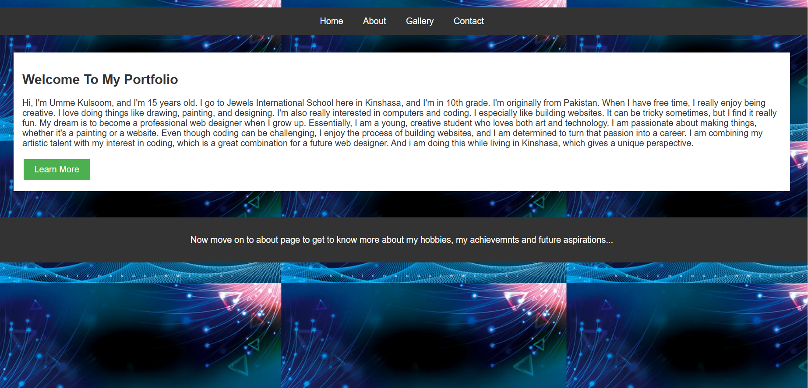
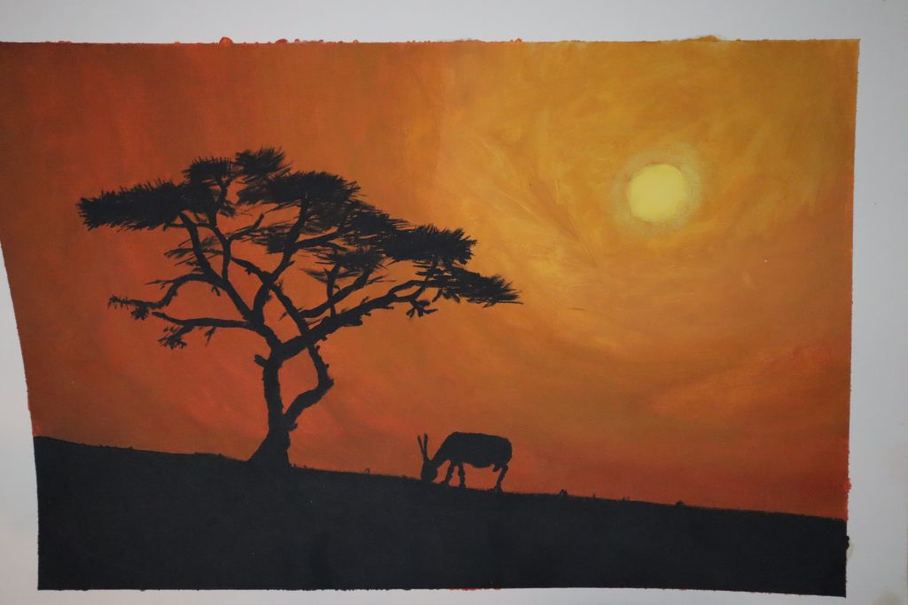
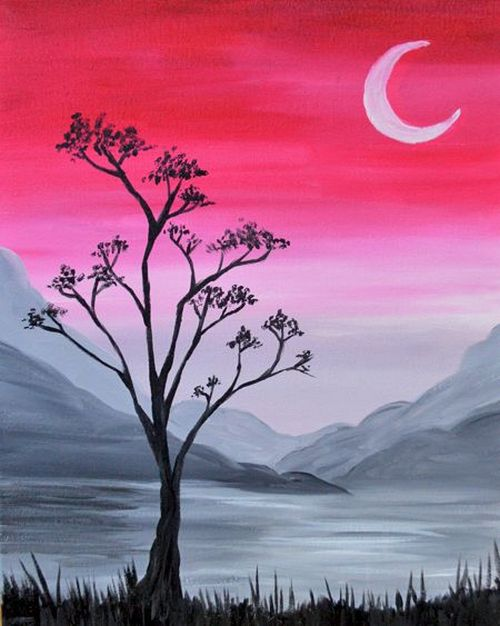
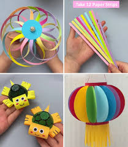
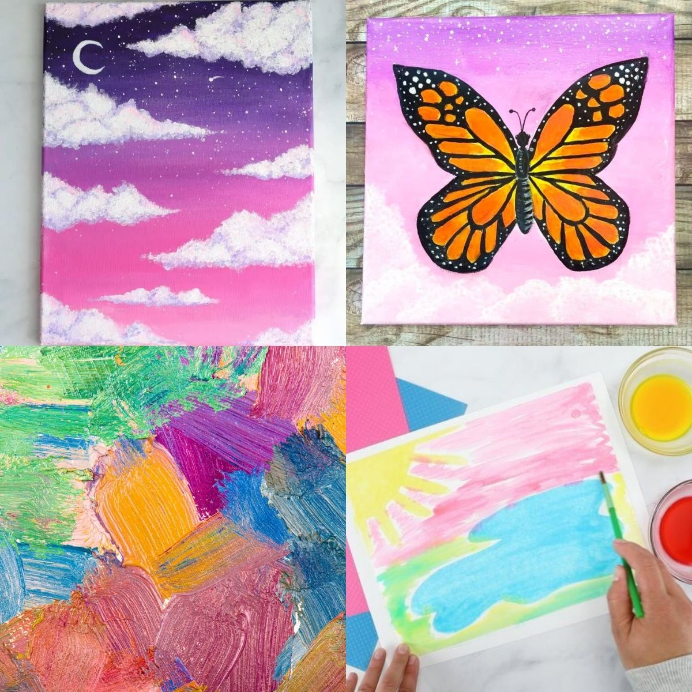

Welcome
Welcome everyone to my official site! We're here to explore the exciting world of arts, where imagination takes center stage. Get ready to dive into a space where you can discover and develop your designing talents, unlock your creative potential, and so much more. Whether you're a seasoned artist or just curious to try something new, this is a place to experiment, learn, and let your artistic spirit shine. Let's embark on this journey of discovery together!
Feel free to explore our site and learn more about arts and feel free to contact us for any queries.
About Us
Hi everyone! I'm a 15-year-old on a mission to unleash my inner artist, and I'm so excited to share my journey with you. I'm diving headfirst into the world of design, experimenting with colors, textures, and digital tools to bring my ideas to life. I also love exploring different ways to spark creativity, from crafting unique projects to simply thinking outside the box. Through this site, I hope to inspire you to find your own creative spark and discover the amazing things you can create. Let's learn and grow together, and maybe even inspire each other along the way!
The list of things that i am going to show out through my journey:
My gallery
-

"Imagine a peaceful night, where a cherry blossom tree glows under the moonlight. The branches reach up towards a magical hand, as if the moon itself is creating this beautiful scene. It's a dreamy painting, full of soft colors and a touch of fantasy."
-

"This image shows a brightly colored, hexagonal pen holder made from folded paper. Each of the six sides features a different color, creating a vibrant and geometric design."
-

"This image displays a collection of ten distinct border designs, neatly arranged in a grid. Each border features a unique pattern and color scheme, showcasing a variety of styles. Some borders have simple geometric shapes, while others incorporate floral or whimsical motifs. The designs are presented on a white background, highlighting their individual details and making them easy to view."
-

This image shows a website's homepage, designed as a personal portfolio. At the top, there's a navigation menu with links to "Home," "About," "Gallery," and "Contact." Below the menu, a white rectangular box contains a welcome message and a short biography of a 15-year-old named Umme Kulsoom, who enjoys art, coding, and website design. A green "Learn More" button is within the box. Underneath, a dark gray bar encourages visitors to explore the "About" page. The background features a repeating pattern of abstract, glowing blue and green shapes against a dark backdrop, giving the site a modern and vibrant look.
-

This is a painting of an African sunset. The sky is a mix of warm orange and yellow colors, with a bright sun visible. In the foreground, there's a dark silhouette of a tree and a single animal,possibly an antelope, standing on a dark ground. It captures a peaceful and iconic scene of the African plains at dusk.
-

This image shows a collection of colorful, hand-drawn border designs. Each border has different patterns and themes, including balloons, geometric shapes, flowers, and decorative lines. They are ideas for decorating the edges of a page or a project.
-

This picture shows several colorful, decorative frames stacked on top of each other. Each frame has a different bright and cheerful pattern, like stripes, polka dots, and geometric shapes. They are examples of fun and vibrant border designs.
-

This picture shows a colorful wall hanging decoration. It has many bright flowers in different colors attached to strings, hanging down. It is a cheerful and handmade decoration for a wall. You can easily create this craft at home for decorating your house or room.
-

This is a painting of space. It shows several colorful planets and stars against a dark blue background. One of the planets has rings around it. It displays a simple and pretty picture of a galaxy.
-

This is a simple painting of a nighttime landscape. There's a dark tree in the foreground, and behind it, you can see a body of water and some mountains in shades of gray. The sky is a blend of pink and dark colors, with a bright crescent moon. It's a calm and peaceful scene.
-

This picture shows four different craft ideas. - The top left shows a colorful pinwheel made from paper strips. - The top right shows someone holding a bunch of colorful paper straws. - The bottom left shows two cute, small turtles made from yellow and green materials. - The bottom right shows a colorful paper lantern with yellow tassels hanging from the bottom. It's a collection of fun and easy DIY projects.
-

This picture shows four different colorful paintings. -Top left: A night scene with a crescent moon, stars, and pink and purple clouds. -Top right: A bright orange and black butterfly on a light purple background. -Bottom left: An abstract painting with many different colorful brushstrokes. -Bottom right: Someone painting a picture with colorful stripes. It's a collection of different styles and subjects of paintings.
Contact Us
If you have any questions or would like to learn more about arts and design skills, please feel free to contact me.
Email: syedaummekulsoomz@gmail.com
Phone: 2439867710
Country calling code: +243
Address: 12A Avenue des Ambassadeurs, Quartier Golf, Gombe, Kinshasa, Democratic Republic of the Congo
City: Kinshasa
Country: Democratic Republic of the Congo
State/province/area: Kinshasa
Contact Form
Please fill in the basic requirements below so we can easily reach you:-